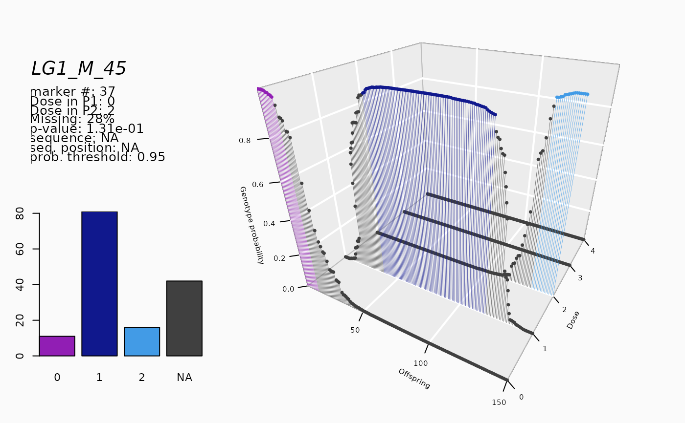

Reads an external data file generated as output of saveMarkerModels.
This function creates an object of class mappoly.data.
a character string with the name of (or full path to) the input file
the ploidy level
a character string containing the name (or pattern of genotype IDs) of parent 1
a character string containing the name (or pattern of genotype IDs) of parent 2
a character string containing the name (or pattern of genotype IDs) of the offspring
individuals. If NULL (default) it considers all individuals as offsprings, except
parent1 and parent2.
if TRUE (default) converts data points with unexpected
genotypes (i.e. no double reduction) to 'NA'. See function segreg_poly
for information on expected classes and their respective frequencies.
logical. If TRUE (default), removes redundant markers
during map construction, keeping them annotated to in order to include them in the final map.
indicates whether to use the joint probability 'joint' (default) or the
maximum probability of multiple replicates (if available) to assign dosage to parents.
If there is one observation per parent, both options will yield the same results.
threshold probability to assign a dosage to parents. If the probability
is smaller than thresh.parent.geno, the marker is discarded.
threshold probability to assign a dosage to offspring. If the probability
is smaller than prob.thres, the data point is converted to 'NA'.
indicates whether the characters in the input file are separated by 'white spaces' ("table") or by commas ("csv").
if TRUE (default), the current progress is shown; if
FALSE, no output is produced
An object of class mappoly.data which contains a
list with the following components:
ploidy level
number individuals
total number of markers
the names of the individuals
the names of the markers
a vector containing the dosage in
parent P for all n.mrk markers
a vector containing the dosage in
parent Q for all n.mrk markers
a vector indicating which sequence each marker belongs. Zero indicates that the marker was not assigned to any sequence
Physical position of the markers into the sequence
NULL (unused in this type of data)
NULL (unused in this type of data)
NULL (unused in this type of data)
a matrix containing the dosage for each markers (rows)
for each individual (columns). Missing data are represented by
ploidy_level + 1
number of phenotypic traits
a matrix containing the phenotypic data. The rows correspond to the traits and the columns correspond to the individuals
if elim.redundant = TRUE, holds all non-redundant markers
if elim.redundant = TRUE, holds all non-redundant markers and its equivalence to the redundant ones
Voorrips, R.E., Gort, G. & Vosman, B. (2011) Genotype calling in tetraploid species from bi-allelic marker data using mixture models. _BMC Bioinformatics_. doi:10.1186/1471-2105-12-172
# \donttest{
#### Tetraploid Example
ft <- "https://raw.githubusercontent.com/mmollina/MAPpoly_vignettes/master/data/fitpoly.dat"
tempfl <- tempfile()
download.file(ft, destfile = tempfl)
fitpoly.dat <- read_fitpoly(file.in = tempfl, ploidy = 4,
parent1 = "P1", parent2 = "P2",
verbose = TRUE)
#> Reading the following data:
#> Ploidy level: 4
#> No. individuals: 150
#> No. markers: 145
#> No. informative markers: 138 (95.2%)
#> ...
#> Done with reading.
#> Filtering non-conforming markers.
#> ...
#> Performing chi-square test.
#> ...
#> Done.
print(fitpoly.dat, detailed = TRUE)
#> This is an object of class 'mappoly.data'
#> Ploidy level: 4
#> No. individuals: 150
#> No. markers: 138
#> Prob. threshold to declare missing: 0.95
#> Missing data: 3.89%
#>
#> No. markers per chromosome: not available
#> ----------
#> No. of markers per dosage combination in both parents:
#> P1 P2 freq
#> 0 1 18
#> 0 2 24
#> 1 0 18
#> 1 1 19
#> 1 2 10
#> 1 3 3
#> 2 0 13
#> 2 1 6
#> 2 2 15
#> 2 3 2
#> 3 1 1
#> 3 2 5
#> 3 3 2
#> 3 4 1
#> 4 2 1
plot(fitpoly.dat)
plot_mrk_info(fitpoly.dat, 37)

# }